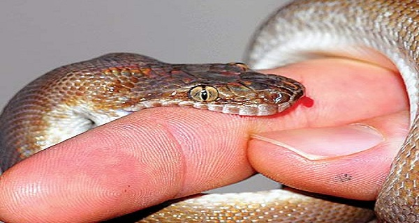

दोस्तो सबसे पहले साँपो के बारे मे एक महत्वपूर्ण बात आप ये जान लीजिये ! कि अपने देश भारत मे 550 किस्म के साँप है ! जैसे एक cobra है ,viper है ,karit है ! ऐसी 550 किस्म की साँपो की जातियाँ हैं ! इनमे से मुश्किल से 10 साँप है जो जहरीले है सिर्फ 10 ! बाकी सब non poisonous है! इसका मतलब ये हुआ 540 साँप ऐसे है जिनके काटने से आपको कुछ नहीं होगा !! बिलकुल चिंता मत करिए !
लेकिन साँप के काटने का डर इतना है (हाय साँप ने काट लिया ) और कि कई बार आदमी heart attack से मर जाता है !जहर से नहीं मरता cardiac arrest से मर जाता है ! तो डर इतना है मन मे ! तो ये डर निकलना चाहिए !
वो डर कैसे निकलेगा ????
जब आपको ये पता होगा कि 550 तरह के साँप है उनमे से सिर्फ 10 साँप जहरीले हैं ! जिनके काटने से कोई मरता है ! इनमे से जो सबसे जहरीला साँप है उसका नाम है !
russell viper ! उसके बाद है karit इसके बाद है viper और एक है cobra ! king cobra जिसको आप कहते है काला नाग !! ये 4 तो बहुत ही खतरनाक और जहरीले है इनमे से किसी ने काट लिया तो 99 % chances है कि death होगी !
लेकिन अगर आप थोड़ी होशियारी दिखाये तो आप रोगी को बचा सकते हैं
होशियारी क्या दिखनी है ???
आपने देखा होगा साँप जब भी काटता है तो उसके दो दाँत है जिनमे जहर है जो शरीर के मास के अंदर घुस जाते हैं ! और खून मे वो अपना जहर छोड़ देता है ! तो फिर ये जहर ऊपर की तरफ जाता है ! मान लीजिये हाथ पर साँप ने काट लिया तो फिर जहर दिल की तरफ जाएगा उसके बाद पूरे शरीर मे पहुंचेगा ! ऐसे ही अगर पैर पर काट लिया तो फिर ऊपर की और heart तक जाएगा और फिर पूरे शरीर मे पहुंचेगा ! कहीं भी काटेगा तो दिल तक जाएगा ! और पूरे मे खून मे पूरे शरीर मे उसे पहुँचने मे 3 घंटे लगेंगे !
मतलब ये है कि रोगी 3 घंटे तक तो नहीं ही मरेगा ! जब पूरे दिमाग के एक एक हिस्से मे बाकी सब जगह पर जहर पहुँच जाएगा तभी उसकी death होगी otherwise नहीं होगी ! तो 3 घंटे का time है रोगी को बचाने का और उस तीन घंटे मे अगर आप कुछ कर ले तो बहुत अच्छा है !
क्या कर सकते हैं ?? ???
घर मे कोई पुराना इंजेक्शन (injection) हो तो उसे ले और आगे जहां सुई(needle) लगी होती है वहाँ से काटे ! सुई(needle) जिस पलास्टिक मे फिट होती है उस प्लास्टिक वाले हिस्से को काटे !! जैसे ही आप सुई के पीछे लगे पलास्टिक वाले हिस्से को काटेंगे तो वो injection एक सक्षम पाईप की तरह हो जाएगा ! बिलकुल वैसा ही जैसा होली के दिनो मे बच्चो की पिचकारी होती है !
उसके बाद आप रोगी के शरीर पर जहां साँप ने काटा है वो निशान ढूँढे ! बिलकुल आसानी से मिल जाएगा क्यूंकि जहां साँप काटता है वहाँ कुछ सूजन आ जाती है और दो निशान जिन पर हल्का खून लगा होता है आपको मिल जाएँगे ! अब आपको वो injection( जिसका सुई वाला हिस्सा आपने काट दिया है) लेना है और उन दो निशान मे से पहले एक निशान पर रख कर उसको खीचना है ! जैसी आप निशान पर injection रखेंगे वो निशान पर चिपक जाएगा तो उसमे vacuum crate हो जाएगा ! और आप खींचेगे तो खून उस injection मे भर जाएगा ! बिलकुल वैसे ही जैसे बच्चे पिचकारी से पानी भरते हैं ! तो आप इंजेक्शन से खींचते रहिए !और आप first time निकलेंगे तो देखेंगे कि उस खून का रंग हल्का blackish होगा या dark होगा तो समझ लीजिये उसमे जहर मिक्स हो गया है !
तो जब तक वो dark और blackish रंग blood निकलता रहे आप खिंचीये ! तो वो सारा निकल आएगा ! क्यूंकि साँप जो काटता है उसमे जहर ज्यादा नहीं होता है 0.5 मिलीग्राम के आस पास होता है क्यूंकि इससे ज्यादा उसके दाँतो मे रह ही नहीं सकता ! तो 0.5 ,0.6 मिलीग्राम है दो तीन बार मे आपने खीच लिया तो बाहर आ जाएगा ! और जैसे ही बाहर आएगा आप देखेंगे कि रोगी मे कुछ बदलाव आ रहा है थोड़ी consciousness (चेतना) आ जाएगी ! साँप काटने से व्यकित unconsciousness हो जाता है या semi consciousness हो जाता है और जहर को बाहर खींचने से चेतना आ जाती है ! consciousness आ गई तो वो मरेगा नहीं ! तो ये आप उसके लिए first aid (प्राथमिक सहायता) कर सकते हैं !
इसी injection को आप बीच से कट कर दीजिये बिलकुल बीच कट कर दीजिये 50% इधर 50% उधर ! तो आगे का जो छेद है उसका आकार और बढ़ जाएगा और खून और जल्दी से उसमे भरेगा !
तो ये आप रोगी के लिए first aid (प्राथमिक सहायता) के लिए ये कर सकते हैं !
____________________________
दूसरा एक medicine आप चाहें तो हमेशा अपने घर मे रख सकते हैं बहुत सस्ती है homeopathy मे आती है ! उसका नाम है NAJA (N A J A ) ! homeopathy medicine है किसी भी homeopathy shop मे आपको मिल जाएगी ! और इसकी potency है 200 ! आप दुकान पर जाकर कहें NAJA 200 देदो ! तो दुकानदार आपको दे देगा ! ये 5 मिलीलीटर आप घर मे खरीद कर रख लीजिएगा 100 लोगो की जान इससे बच जाएगी ! और इसकी कीमत सिर्फ पाँच रुपए है ! इसकी बोतल भी आती है 100 मिलीग्राम की 70 से 80 रुपए की उससे आप कम से कम 10000 लोगो की जान बचा सकते हैं जिनको साँप ने काटा है !
और ये जो medicine है NAJA ये दुनिया के सबसे खतरनाक साँप का ही poison है जिसको कहते है क्रैक ! इस साँप का poison दुनिया मे सबसे खराब माना जाता है ! इसके बारे मे कहते है अगर इसने किसी को काटा तो उसे भगवान ही बचा सकता है ! medicine भी वहाँ काम नहीं करती उसी का ये poison है लेकिन delusion form मे है तो घबराने की कोई बात नहीं ! आयुर्वेद का सिद्धांत आप जानते है लोहा लोहे को काटता है तो जब जहर चला जाता है शरीर के अंदर तो दूसरे साँप का जहर ही काम आता है !
तो ये NAJA 200 आप घर मे रख लीजिये !अब देनी कैसे है रोगी को वो आप जान लीजिये !
1 बूंद उसकी जीभ पर रखे और 10 मिनट बाद फिर 1 बूंद रखे और फिर 10 मिनट बाद 1 बूंद रखे !! 3 बार डाल के छोड़ दीजिये !बस इतना काफी है !
और राजीव भाई video मे बताते है कि ये दवा रोगी की जिंदगी को हमेशा हमेशा के लिए बचा लेगी ! और साँप काटने के एलोपेथी मे जो injection है वो आम अस्तप्तालों मे नहीं मिल पाते ! डाक्टर आपको कहेगा इस अस्तपाताल मे ले जाओ उसमे ले जाओ आदि आदि !!
और जो ये एलोपेथी वालो के पास injection है इसकी कीमत 10 से 15 हजार रुपए है ! और अगर मिल जाएँ तो डाक्टर एक साथ 8 से -10 injection ठोक देता है ! कभी कभी 15 तक ठोक देता है मतलब लाख-डेड लाख तो आपका एक बार मे साफ !! और यहाँ सिर्फ 10 रुपए की medicine से आप उसकी जान बचा सकते हैं !
और राजीव भाई इस video मे बताते है कि injection जितना effective है मैं इस दवा(NAJA) की गारंटी लेता हूँ ये दवा एलोपेथी के injection से 100 गुना (times) ज्यादा effective है !
तो अंत आप याद रखिए घर मे किसी को साँप काटे और अगर दवा(NAJA) घर मे न हो ! फटाफट कहीं से injection लेकर first aid (प्राथमिक सहायता) के लिए आप injection वाला उपाय शुरू करे ! और अगर दवा है तो फटाफट पहले दवा पिला दे और उधर से injection वाला उपचार भी करते रहे !
दवा injection वाले उपचार से ज्यादा जरूरी है !!
________________________________
तो ये जानकारी आप हमेशा याद रखे पता नहीं कब काम आ जाए हो सकता है आपके ही जीवन मे काम आ जाए ! या पड़ोसी के जीवन मे या किसी रिश्तेदार के काम आ जाए! तो first aid के लिए injection की सुई काटने वाला तरीका और ये NAJA 200 hoeopathy दवा ! 10 - 10 मिनट बाद 1 - 1 बूंद तीन बार
रोगी की जान बचा सकती है !!